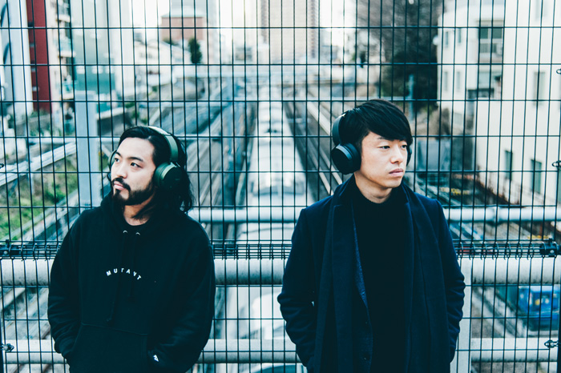

Creepy Nuts
プロフィール
日本の三連覇のラッパー「R-指定」と、世界一のDJ「DJ 松永」による、HIP HOPユニット。
2017年Sony Musicよりメジャーデビューし、2020年8月に「かつて天才だった俺たちへ」をリリース。
2021年アルバム「Case」をリリース。収録曲「のびしろ」がTikTokで1億回再生を越えるなど、その他SNSでも注目を集めている。 9月にアルバムを引っ提げた全国ツアーは横浜アリーナを含む公演全てが完売。ニッポン放送「Creepy Nuts のオールナイトニッポン」、CMやドラマなど多方面で活躍を見せる。
R-指定（左）
1991年9月10日生まれ。大阪府堺市出身。
ラッパー。DJ松永と「Creepy Nuts」を結成。日本最高峰のMCバトルULTIMATE MC BATTLE（以下UMB）大阪大会にて5連覇。2012年、2013年、2014年には全国大会UMB GRAND CHAMPIONSHIPで優勝し、史上初の全国３連覇を成し遂げる。過去テレビ朝日で放送されていた「フリースタイルダンジョン」では、二代目ラスボスとして活躍。数多くの楽曲に客演として参加する他、梅田サイファーのメンバーとしても活動中。
DJ 松永（右）
1990年8月23日生まれ。新潟県長岡市出身。
DJ、Track Maker、Turntablist。イギリス・ロンドンで行われた世界最大規模のDJ大会「DMC WORLD DJ CHAMPIONSHIPS 2019」で優勝し、世界一のDJに。東京オリンピック閉会式に出演。テレビやラジオに数多く出演し、文藝春秋「文學界」にて連載を持つなど、幅広く活動中